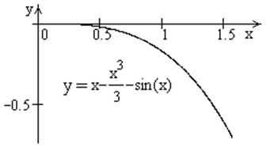

П19.1 №14
Докажите, что для
.
РЕШЕНИЕ:
Рассмотрим функцию ,
.
Производная ,
так как  при , т.е. функция является убывающей и не превосходит для ,
т.е. , откуда .
при , т.е. функция является убывающей и не превосходит для ,
т.е. , откуда .
при , т.е. функция является убывающей и не превосходит для ,
т.е. , откуда . 